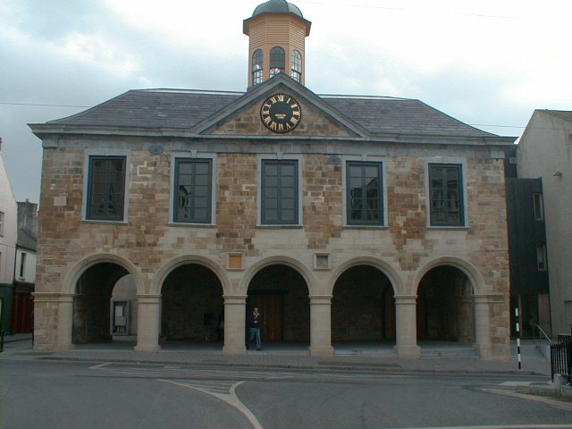
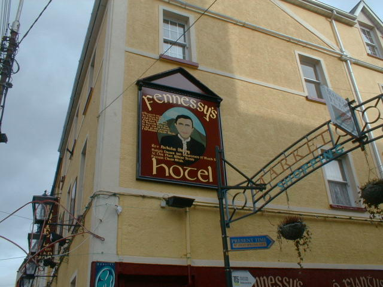

The Main Gaurd,
The Main Gaurd
The Main Gaurd was built in 1684 by james butler 1st duke of Ormand at that time it was used as a courthouse.
As well as a corthose they were used as private apartments,a dinning room and a drawing room. The ground floor was
a open arcade with 5 semi-circuler arches at the west side and similar arches on the north side. The Main Gaurd was a
"thosel" an office where tolls, duties, snd costoms were collected. It was an assize court from 1716 until 1810 when it
became a barracks hence the name "Main Gaurd".

Fr Nicolas Sheehy was well known for his oppositon to penal law. He was arrested for treason but found not guilty and
brought to Clonmel to be charged with the murder of John Bridge Who was belived to have been missing. Another man named
Edward Meehan was charged with the same murder and was tried in the Main Gaurd along with Fr Sheehy. They were both convicted
and hanged. The Court later discovered that the cheif witnesses were giving faules evidence and in fact the suposed victum was
seen alive and well. Below is a picture of where Fr sheehy's head was hung to warn the towns people what thay would do if anyone
betrayed them.

© 2004 history Of Clonmel